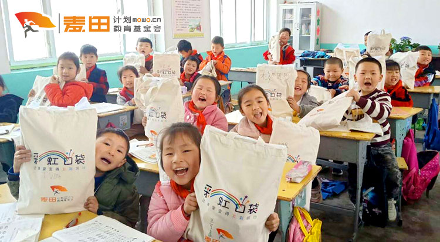

Brand
首页
爱心项目
资讯
公益短片
以废代捐
个人中心
zhangsan
退出
流浪动物绝育行动
2020-09-20
“二十天，一群人，我们改变了一只狗的命运！” 一只德牧妹妹，在满是垃圾、只有四堵墙的拆迁楼里待了一年多。她每天的生活就是向窗外探出头，盼望好心人的投喂，以及傻傻地等待那个早已遗弃她的主人。 武汉市小动物保护协会（以下简称武小协或协会）对她展开了救援。远远地看上去，她似乎很亲人，体格庞大的她看起来威风凛凛，但近距离接触时，才发现她眼神里流露出的恐惧和担忧。 这是一只很渴望被亲近，却又因太久没有接触外界，而显得有些怯生生的狗狗。 检查身体、绝育……德牧的身体状况恢复到了正常水平。为了感谢武汉市第八人民医院医务人员的照顾，武小协给这只德牧取名为“八妹”。  近日，有部队的兵哥哥联系到武小协，希望能领养八妹。为她准备了两箱“嫁妆”后，协会的工作人员将绳子和陪伴八妹的使命，一同交到了兵哥哥的手里。 自2006年开始，武小协（前身为武汉流浪宠物救助站）一直坚持动物保护工作，呼吁领养代替购买，用爱终止流浪。 这不是他们第一次进入大众视野。 早在疫情封城期间，武小协就因发起宠物上门救助的志愿活动引发关注，武小协的工作人员及其他志愿者们在新冠肺炎肆虐武汉之际勇敢逆行，帮助暂时无法返汉的家庭上门投喂猫狗。  这样的公益行动因地因时制宜，也因其新冠肺炎的背景而变得特殊和意义非凡。 小噢对话武小协协会会长杜帆，和他聊了聊置身于其中的经历和心得。
推荐

为乡村孩子提供美术物资和美术课程，培养和保护孩子的艺术能力。
为乡村孩子提供美术物资和美术课程，培养和保护孩子的艺术能力。
为乡村孩子提供美术物资和美术课程，培养和保护孩子的艺术能力。